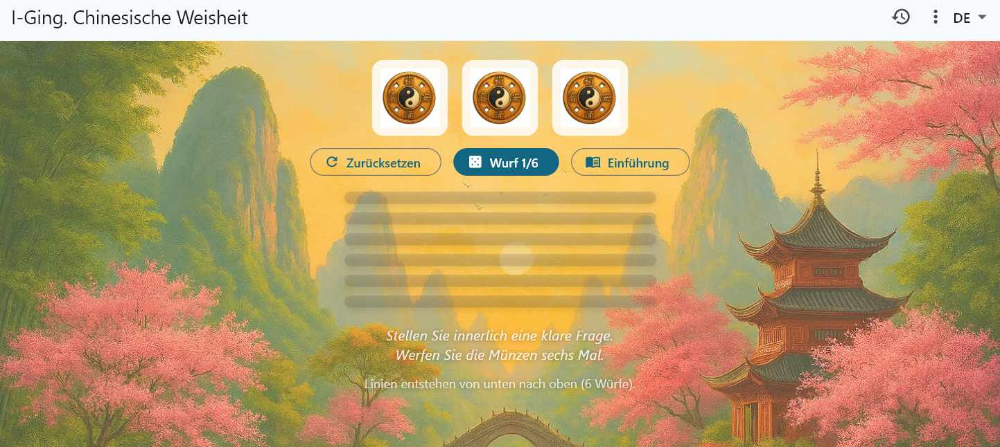
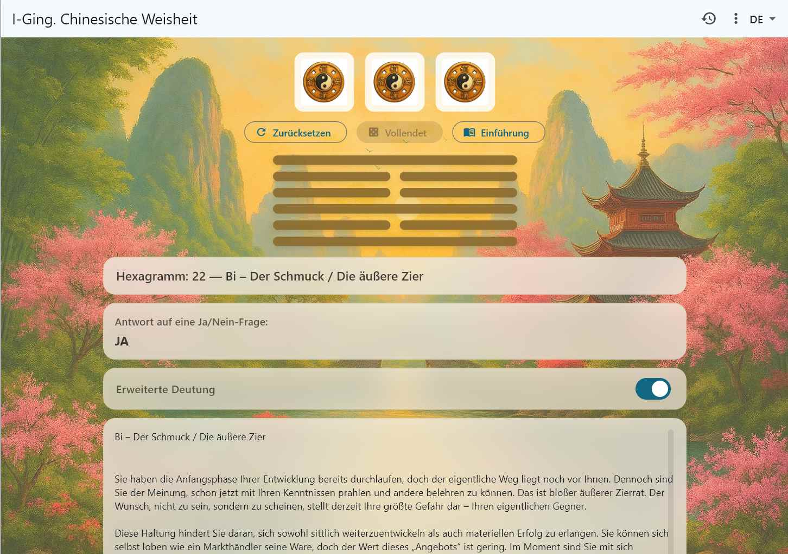
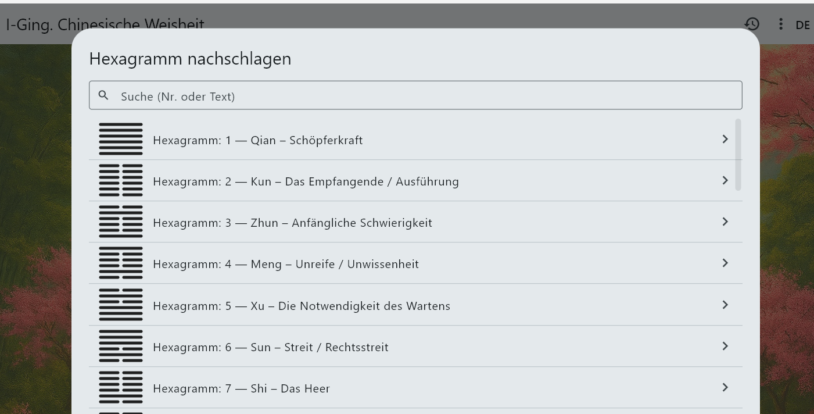
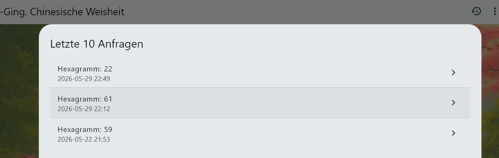

I Ching · Chinese Wisdom
Eine moderne, ruhige Interpretation des klassischen I‑Ging — werbefrei, offline und respektvoll gegenüber der Tradition.
A calm, modern digital edition of the I Ching, based on A. V. Krutikov’s interpretation. Designed for clarity, reflection, and everyday guidance.
Eine ruhige, moderne digitale Edition des I‑Ging nach A. V. Krutikov. Klar strukturiert, intuitiv und für den Alltag nutzbar.
Современная и спокойная цифровая версия «И‑цзина» по интерпретации А. В. Крутикова. Чёткая структура, интуитивность и практическая польза.
Ein Einblick in die ruhige, klare Gestaltung der App – inspiriert vom klassischen I‑Ging.




Noch nicht verfügbar